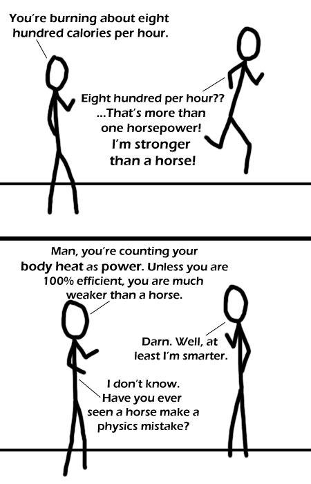

Comic JK 249
When I Feel Like It
⇤
<
?
>
⇥

⇤
<
?
>
⇥
Forum
.
RSS
.
Digg
.
Facebook
.
Reddit
.
Twitter
.
Stumbleupon
Your mother is just barely smarter than a horse. Another brilliant JK comic!!! :D Far funnier and wittier than xkcd has been recently... <sigh>. >They switched sides, didn't you know? ;-) <I resent that.> (why did you send it again?) I can't say I've ever seen a horse do that, but I have seen one accidentally knock over its own food bucket and then get spooked by it. They truly are dumb animals. > I've seen that too. I also had to spend a month changing dressings on a horse's foot every FOUR HOURS because it At least the horse didn't know what was gonna happen. Everyone I know still jumps out of their skin when the toaster goes off, and they make toast *every morning*. MAMMA? LUIGI? SOUTHSIDE got a splinter. WHO's the dumb one? >> To be fair, the human species has its fair share of truly retarded people, too. As "Yahtzee" is always so quick to remind us. >>> Humanity tends to be more *proudly* and *aggressively* stupid. >>>>Horses actually have very unique personalities and intelligence quotients, much like people. >>>>> Yes, but they're all various shades of "dumb as a sack of rocks". Kind of like cats. Anyone who says differently either IS, or wishes they were, a teenaged girl. I WILL however, say that I've seen horses defy the law of gravity in order to avoid stepping on a child. This page is the top google result for "stronger than a horse" :) >wow- i thought xkcd was the only one to be aable to affect google rankings >>JK>xkcd.lololololololololololololololxkcdisfail compared to this